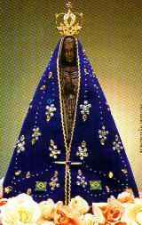

A História mais autêntica e admirável do encontro da imagem milagrosa por pescadores; graças e benefícios provenientes da maternal e poderosa intercessão junto a DEUS; Basílica Nova, Santuário Nacional; informações preciosas para romeiros, peregrinos e visitantes.




| ANTECEDENTES HISTÓRICO - ( Padres jesuítas, Colonização dos índios, Febre do Ouro, os Bandeirantes, Intervenção da Coroa Portuguesa) |
| O CONDE DE ASSUMAR - (Chegada, Posse da Capitania, Visita as Minas, Vereadores preparam Banquete para recepção) |
| A PESCA MILAGROSA - (Preparativos, a Pescaria, o Notável Milagre, Significado do Milagre) |
| PRIMEIRA CAPELINHA - (Altar de Silvana, Oratório do Atanásio, Capelinha feita pelo Padre Vilela, Igreja no Morro dos Coqueiros) |
| BASÍLICA NOVA, SANTUÁRIO NACIONAL - (Chegada dos Padres Redentoristas, Pio X, Pio XI, coroada Rainha e Padroeira do Brasil, Paulo VI, Presente da Rosa de Ouro, João Paulo II) |
| MILAGRES PELA INTERCESSÃO DE NOSSA SENHORA - (Cegos recuperam a visão, Coxos andam, doenças desaparecem, milhares de ex- votos testemunham poderosa intercessão junto a DEUS) |